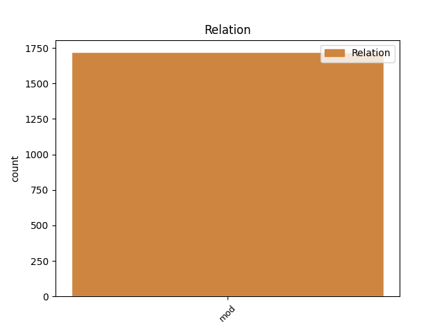
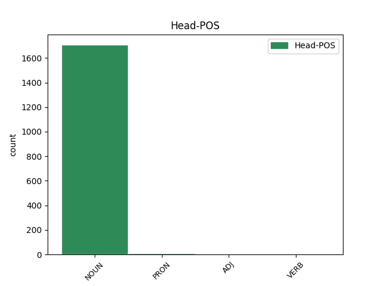
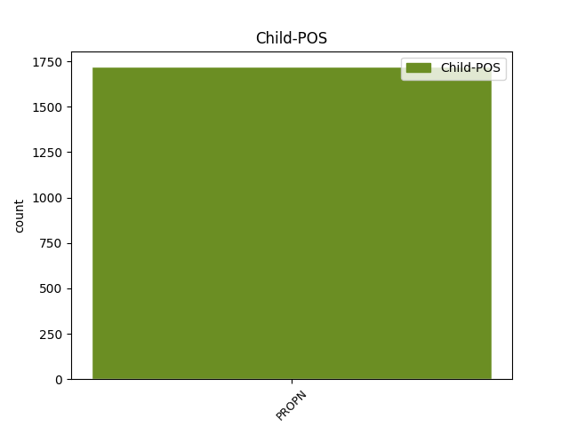

Distribution of features within this leaf



Agreement Rules sorted by frequency.
- When the dependent token is the modifer(mod) of the head token, and the head token is NOUN and the dependent token is PROPN.
1 Să _ _ _ _ 0 _ _ _
2 dea _ _ _ _ 0 _ _ _
3 clăcașul _ _ _ _ 0 _ _ _
4 la _ _ _ _ 0 _ _ _
5 stăpînul _ _ _ _ 0 _ _ _
6 moșii _ _ _ _ 0 _ _ _
7 o _ _ _ _ 0 _ _ _
8 găină _ _ _ _ 0 _ _ _
9 de _ _ _ _ 0 _ _ _
10 Crăciun _ _ _ _ 0 _ _ _
11 și _ _ _ _ 0 _ _ _
12 un _ _ _ _ 0 _ _ _
13 puiu _ _ _ _ 0 _ _ _
14 de _ _ _ _ 0 _ _ _
15 găină _ _ _ _ 0 _ _ _
16 de _ _ _ _ 0 _ _ _
17 sînt sfânt NOUN Ncmsrn Case=Acc,Nom|Definite=Ind|Gender=Masc|Number=Sing 0 _ _ _
18 Pietru Petru PROPN Npmsry Case=Acc,Nom|Definite=Def|Gender=Masc|Number=Sing 17 mod _ ref=COMPLETARE.7
19 ce _ _ _ _ 0 _ _ _
20 sînt _ _ _ _ 0 _ _ _
21 obicinuite _ _ _ _ 0 _ _ _
22 , _ _ _ _ 0 _ _ _
23 făr _ _ _ _ 0 _ _ _
24 de _ _ _ _ 0 _ _ _
25 a _ _ _ _ 0 _ _ _
26 fi _ _ _ _ 0 _ _ _
27 volnic _ _ _ _ 0 _ _ _
28 acel _ _ _ _ 0 _ _ _
29 stăpîn _ _ _ _ 0 _ _ _
30 de _ _ _ _ 0 _ _ _
31 a _ _ _ _ 0 _ _ _
32 ceare _ _ _ _ 0 _ _ _
33 să _ _ _ _ 0 _ _ _
34 i _ _ _ _ 0 _ _ _
35 le _ _ _ _ 0 _ _ _
36 plătească _ _ _ _ 0 _ _ _
37 clăcașii _ _ _ _ 0 _ _ _
38 în _ _ _ _ 0 _ _ _
39 bani _ _ _ _ 0 _ _ _
40 , _ _ _ _ 0 _ _ _
41 ci _ _ _ _ 0 _ _ _
42 să _ _ _ _ 0 _ _ _
43 le _ _ _ _ 0 _ _ _
44 priimească _ _ _ _ 0 _ _ _
45 în _ _ _ _ 0 _ _ _
46 natură _ _ _ _ 0 _ _ _
47 . _ _ _ _ 0 _ _ _
1 Cu _ _ _ _ 0 _ _ _
2 toată _ _ _ _ 0 _ _ _
3 cheltuiala _ _ _ _ 0 _ _ _
4 Dumnealor _ _ _ _ 0 _ _ _
5 CONSTANDIN _ _ _ _ 0 _ _ _
6 CARACAŞ _ _ _ _ 0 _ _ _
7 , _ _ _ _ 0 _ _ _
8 dohtor _ _ _ _ 0 _ _ _
9 , _ _ _ _ 0 _ _ _
10 și _ _ _ _ 0 _ _ _
11 Dumnealui _ _ _ _ 0 _ _ _
12 RĂDUCANUL _ _ _ _ 0 _ _ _
13 CLINCEANUL _ _ _ _ 0 _ _ _
14 , _ _ _ _ 0 _ _ _
15 Biv _ _ _ _ 0 _ _ _
16 ~ _ _ _ _ 0 _ _ _
17 Vel _ _ _ _ 0 _ _ _
18 ~ _ _ _ _ 0 _ _ _
19 Stolnic _ _ _ _ 0 _ _ _
20 , _ _ _ _ 0 _ _ _
21 și _ _ _ _ 0 _ _ _
22 Dumnealui dumnealui PRON Pp3msr Case=Acc,Nom|Gender=Masc|Number=Sing|Person=3|PronType=Prs 0 _ _ _
23 DUMITRACHE Dumitrache PROPN Npmsrn Case=Acc,Nom|Definite=Ind|Gender=Masc|Number=Sing 22 mod _ ref=title.2
24 TOPLICEANUL _ _ _ _ 0 _ _ _
25 , _ _ _ _ 0 _ _ _
26 Biv _ _ _ _ 0 _ _ _
27 ~ _ _ _ _ 0 _ _ _
28 Vel _ _ _ _ 0 _ _ _
29 ~ _ _ _ _ 0 _ _ _
30 Sluger _ _ _ _ 0 _ _ _
31 , _ _ _ _ 0 _ _ _
32 Tipărită _ _ _ _ 0 _ _ _
33 în _ _ _ _ 0 _ _ _
34 privileghiata _ _ _ _ 0 _ _ _
35 Tipografie _ _ _ _ 0 _ _ _
36 a _ _ _ _ 0 _ _ _
37 Dumnealor _ _ _ _ 0 _ _ _
38 ut _ _ _ _ 0 _ _ _
39 Cișmeaua _ _ _ _ 0 _ _ _
40 răposatului _ _ _ _ 0 _ _ _
41 întru _ _ _ _ 0 _ _ _
42 fericire _ _ _ _ 0 _ _ _
43 Domn _ _ _ _ 0 _ _ _
44 MAVROGHENI _ _ _ _ 0 _ _ _
45 din _ _ _ _ 0 _ _ _
46 București _ _ _ _ 0 _ _ _
47 , _ _ _ _ 0 _ _ _
48 1818 _ _ _ _ 0 _ _ _
49 . _ _ _ _ 0 _ _ _
1 Ştiu- _ _ _ _ 0 _ _ _
2 te _ _ _ _ 0 _ _ _
3 cine _ _ _ _ 0 _ _ _
4 ești _ _ _ _ 0 _ _ _
5 : _ _ _ _ 0 _ _ _
6 cel _ _ _ _ 0 _ _ _
7 sfînt sfânt ADJ Afpmsrn Case=Acc,Nom|Definite=Ind|Degree=Pos|Gender=Masc|Number=Sing 0 _ _ _
8 al _ _ _ _ 0 _ _ _
9 lui _ _ _ _ 0 _ _ _
10 Dumnezău Dumnezeu PROPN Npmsrn Case=Acc,Nom|Definite=Ind|Gender=Masc|Number=Sing 7 mod _ ref=LUCA4.34|SpaceAfter=No
11 . _ _ _ _ 0 _ _ _
1 Frat Frat VERB Vmp--sm-p Gender=Masc|Number=Sing|Polarity=Pos|VerbForm=Part 0 _ _ _
2 Tomas Tomas PROPN Npmsrn Case=Acc,Nom|Definite=Ind|Gender=Masc|Number=Sing 1 mod _ _
3 dzise _ _ _ _ 0 _ _ _
4 : _ _ _ _ 0 _ _ _
5 " _ _ _ _ 0 _ _ _
6 Trei _ _ _ _ 0 _ _ _
7 lucrure _ _ _ _ 0 _ _ _
8 se _ _ _ _ 0 _ _ _
9 cad _ _ _ _ 0 _ _ _
10 să _ _ _ _ 0 _ _ _
11 aibă _ _ _ _ 0 _ _ _
12 omul _ _ _ _ 0 _ _ _
13 cine _ _ _ _ 0 _ _ _
14 va _ _ _ _ 0 _ _ _
15 să _ _ _ _ 0 _ _ _
16 facă _ _ _ _ 0 _ _ _
17 judecată _ _ _ _ 0 _ _ _
18 și _ _ _ _ 0 _ _ _
19 dereptate _ _ _ _ 0 _ _ _
20 : _ _ _ _ 0 _ _ _
21 Întîiu _ _ _ _ 0 _ _ _
22 , _ _ _ _ 0 _ _ _
23 să _ _ _ _ 0 _ _ _
24 aibă _ _ _ _ 0 _ _ _
25 puteare _ _ _ _ 0 _ _ _
26 . _ _ _ _ 0 _ _ _
Disagree Examples:
1 Cugetarea cugetare NOUN Ncfsry Case=Acc,Nom|Definite=Def|Gender=Fem|Number=Sing 0 _ _ _
2 lui _ _ _ _ 0 _ _ _
3 Irod Irod PROPN Npmsrn Case=Acc,Nom|Definite=Ind|Gender=Masc|Number=Sing 1 mod _ ref=MARC6.14.content
4 de _ _ _ _ 0 _ _ _
5 Hristos _ _ _ _ 0 _ _ _
6 . _ _ _ _ 0 _ _ _
1 Că _ _ _ _ 0 _ _ _
2 Irod _ _ _ _ 0 _ _ _
3 trimease _ _ _ _ 0 _ _ _
4 și _ _ _ _ 0 _ _ _
5 prinsease _ _ _ _ 0 _ _ _
6 pe _ _ _ _ 0 _ _ _
7 Ioan _ _ _ _ 0 _ _ _
8 și _ _ _ _ 0 _ _ _
9 -l _ _ _ _ 0 _ _ _
10 legase _ _ _ _ 0 _ _ _
11 în _ _ _ _ 0 _ _ _
12 temniță _ _ _ _ 0 _ _ _
13 , _ _ _ _ 0 _ _ _
14 pentru _ _ _ _ 0 _ _ _
15 Irodiada _ _ _ _ 0 _ _ _
16 , _ _ _ _ 0 _ _ _
17 muiarea muiere NOUN Ncfsry Case=Acc,Nom|Definite=Def|Gender=Fem|Number=Sing 0 _ _ _
18 lui _ _ _ _ 0 _ _ _
19 Filip Filip PROPN Npmsrn Case=Acc,Nom|Definite=Ind|Gender=Masc|Number=Sing 17 mod _ ref=MARC6.17|SpaceAfter=No
20 , _ _ _ _ 0 _ _ _
21 fratele _ _ _ _ 0 _ _ _
22 său _ _ _ _ 0 _ _ _
23 , _ _ _ _ 0 _ _ _
24 că _ _ _ _ 0 _ _ _
25 și- _ _ _ _ 0 _ _ _
26 o _ _ _ _ 0 _ _ _
27 luase _ _ _ _ 0 _ _ _
28 muiare _ _ _ _ 0 _ _ _
29 . _ _ _ _ 0 _ _ _
1 Și _ _ _ _ 0 _ _ _
2 tîmplîndu _ _ _ _ 0 _ _ _
3 -să _ _ _ _ 0 _ _ _
4 o _ _ _ _ 0 _ _ _
5 zi _ _ _ _ 0 _ _ _
6 de _ _ _ _ 0 _ _ _
7 treabă _ _ _ _ 0 _ _ _
8 a _ _ _ _ 0 _ _ _
9 nașterii naștere NOUN Ncfsoy Case=Dat,Gen|Definite=Def|Gender=Fem|Number=Sing 0 _ _ _
10 lui _ _ _ _ 0 _ _ _
11 Irod Irod PROPN Npmsrn Case=Acc,Nom|Definite=Ind|Gender=Masc|Number=Sing 9 mod _ ref=MARC6.21|SpaceAfter=No
12 , _ _ _ _ 0 _ _ _
13 în _ _ _ _ 0 _ _ _
14 carea _ _ _ _ 0 _ _ _
15 făcea _ _ _ _ 0 _ _ _
16 cină _ _ _ _ 0 _ _ _
17 boiarilor _ _ _ _ 0 _ _ _
18 săi _ _ _ _ 0 _ _ _
19 și _ _ _ _ 0 _ _ _
20 căpitanilor _ _ _ _ 0 _ _ _
21 și _ _ _ _ 0 _ _ _
22 mai _ _ _ _ 0 _ _ _
23 marilor _ _ _ _ 0 _ _ _
24 a _ _ _ _ 0 _ _ _
25 Galileei _ _ _ _ 0 _ _ _
26 . _ _ _ _ 0 _ _ _
1 Că _ _ _ _ 0 _ _ _
2 lăsînd _ _ _ _ 0 _ _ _
3 porunca poruncă NOUN Ncfsry Case=Acc,Nom|Definite=Def|Gender=Fem|Number=Sing 0 _ _ _
4 lui _ _ _ _ 0 _ _ _
5 Dumnezău Dumnezeu PROPN Npmsrn Case=Acc,Nom|Definite=Ind|Gender=Masc|Number=Sing 3 mod _ ref=MARC7.8|SpaceAfter=No
6 , _ _ _ _ 0 _ _ _
7 țineți _ _ _ _ 0 _ _ _
8 rînduiala _ _ _ _ 0 _ _ _
9 oamenilor _ _ _ _ 0 _ _ _
10 . _ _ _ _ 0 _ _ _
1 Şi _ _ _ _ 0 _ _ _
2 zicea _ _ _ _ 0 _ _ _
3 lor _ _ _ _ 0 _ _ _
4 că _ _ _ _ 0 _ _ _
5 : _ _ _ _ 0 _ _ _
6 Bine _ _ _ _ 0 _ _ _
7 lăpedați _ _ _ _ 0 _ _ _
8 porunca poruncă NOUN Ncfsry Case=Acc,Nom|Definite=Def|Gender=Fem|Number=Sing 0 _ _ _
9 lui _ _ _ _ 0 _ _ _
10 Dumnezău Dumnezeu PROPN Npmsrn Case=Acc,Nom|Definite=Ind|Gender=Masc|Number=Sing 8 mod _ ref=MARC7.9|SpaceAfter=No
11 , _ _ _ _ 0 _ _ _
12 să _ _ _ _ 0 _ _ _
13 țineți _ _ _ _ 0 _ _ _
14 rînduialele _ _ _ _ 0 _ _ _
15 voastre _ _ _ _ 0 _ _ _
16 . _ _ _ _ 0 _ _ _